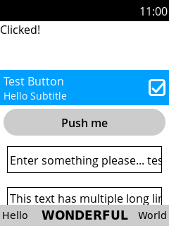

Bananui
|
 Bananui showing demo app | |
| Name | Bananui |
|---|---|
| Graphics stack | Phoc on Wayland |
| Toolkit | Bananui |
| In postmarketOS | |
| Package | N/A |
| Status | Unavailable |
{kind=link}
Bananui is a user interface for feature phones based on parts of Phosh and a custom UI toolkit. The name comes from the "Bananaphone" Nokia 8110 4G (nokia-argon), which it was originally designed for. It should also work on other feature phones that can run mainline Linux.
Contents
Installation
Currently unavailable.
Usage
Bananui shows a simple homescreen with a clock on startup. Pressing Down or OK on the D-Pad takes you to the app list. Pressing Up opens a quick settings panel which lets you adjust the screen brightness.
If your phone has a Menu button, it can be used to open a shortcut menu that allows switching between open windows.
Making calls
Phone numbers can be dialed on the homescreen with the clock. Pressing OK places the call. Incoming calls can be accepted using the Call button. The End call button declines and hangs up calls.
Editing text
Text can be typed by repeatedly pressing a number key, which cycles through the letters assigned to the key. Pressing * or another key commits the last character and lets you enter another character using the same key. The Back key (which is the same as End call on some phones) deletes the last character.
Useful keyboard shortcuts
- *+Up: show quick settings panel
- *+Down: show homescreen
- *+5: toggle virtual mouse cursor
Development
Apps can be written using the Bananui toolkit, the documentation for which is available at https://obp.abscue.de/bananui/bananui.